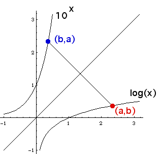

Logarithms
Inverse functions

Suppose
(a,b)
lies on the graph of
log(x).
That is,
b = log(a).
Then 10
b
= 10
log(a)
= a.
Consequently, the point
(b,a)
= (b,10
b
)
lies on the graph of
10
x
.
The graphs of log(x) and 10
x
are reflections of one another across the line
y = x.
The functions are
inverses
of one another.
Return to
Logarithms
.